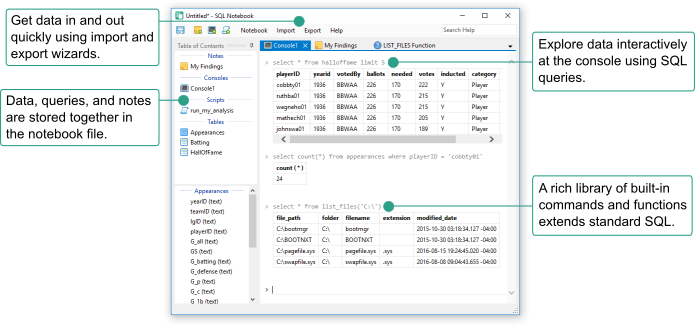
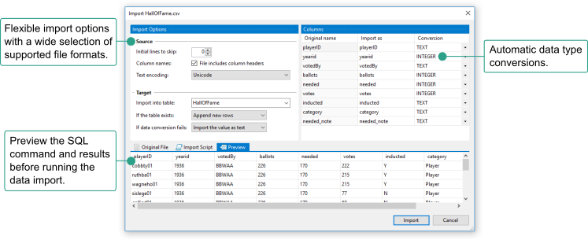
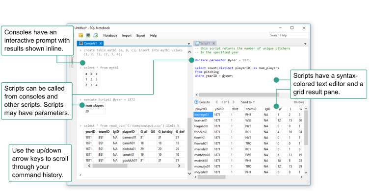
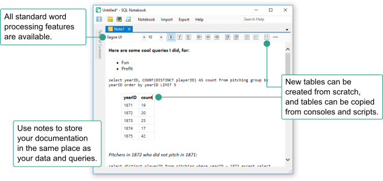

SQL Notebook is a free Windows app for exploring and manipulating tabular data. It is powered by a supercharged SQLite engine, supporting both standard SQL queries and SQL Notebook-specific commands. Everything you need to answer analysis questions about your data, regardless of its format or origin, is built into SQL Notebook.

CSV, JSON, and Excel files can be imported into the notebook as
local SQLite tables. A graphical import wizard and IMPORT script commands are both available.
Microsoft SQL Server, PostgreSQL, and MySQL tables can be linked into the notebook and queried interchangeably with local tables. Remote data is not physically copied into the notebook file unless requested; instead, the data source is queried on-the-fly.
Tables and scripts can be exported in CSV format.

SQL Notebook offers two standard user interfaces for entering SQL queries:
Console: A command prompt that is optimal for quick queries. Enter SQL commands interactively at the ">" prompt and see results inline. The command history and output log of each console are retained in the notebook file for the user's future reference.
Script: Develop more complex scripts using a syntax-colored text editor. Run a script directly by
pressing F5, or invoke it from consoles and other scripts using EXECUTE.
The script may define input parameters using DECLARE PARAMETER.
Any combination of data sources can be used together in the same SQL query, including cross-file, cross-database, and cross-server queries.

User-written documents are stored directly in notebook files alongside your SQL code and data. Standard word processing features are available: fonts, lists, text alignment, and tables. Console and script output can be copied into a note for annotation. By keeping your notes with your code, everything you need will be in one place should you need to revisit some work done in SQL Notebook.

Users with prior SQL or other programming language experience will feel right at home in SQL Notebook. All common programming constructs from other programming languages are available, in addition to standard SQLite queries and commands.
for :i = 1 to 100 begin if :i % 3 = 0 and :i % 5 = 0 print 'FizzBuzz' else if :i % 3 = 0 print 'Fizz' else if :i % 5 = 0 print 'Buzz' else print :i end |
select case when number % 3 = 0 and number % 5 = 0 then 'FizzBuzz' when number % 3 = 0 then 'Fizz' when number % 5 = 0 then 'Buzz' else number end from range(1, 100) |
Learn more in the documentation:
DECLARE, SET)IF/ELSE, FOR, WHILE)THROW, TRY/CATCH)EXECUTE)SQL Notebook is a "batteries included" solution to everyday data analysis needs. A wide variety of functionality is immediately available out of the box.
select filename from list_files('C:\') where extension = '.csv'; select * from read_csv('C:\MyData.csv'); import xls 'C:\Workbook.xls' worksheet 'Sheet2' into tbl1; select year(date_col) as y, month(date_col) as m, day(date_col) as d from tbl1; print 'Current time: ' || getdate();
Learn more in the documentation:
IMPORT CSV, IMPORT XLS, EXPORT TXT)LIST_FILES, READ_CSV, READ_FILE, DOWNLOAD)DATEPART, DATEADD, DATEDIFF, GETDATE)ARRAY, ARRAY_COUNT, ARRAY_GET, ARRAY_SET)A fully searchable in-application help system is ready to answer your questions. Press F1 to view the index of help documents, or enter a keyword into the "Search Help" box in the upper-right corner of the SQL Notebook window. Both SQLite and SQL Notebook documentation is included. Every available statement and function is documented. The documentation is also available online.
SQL Notebook is free and open source software available under the popular MIT license.